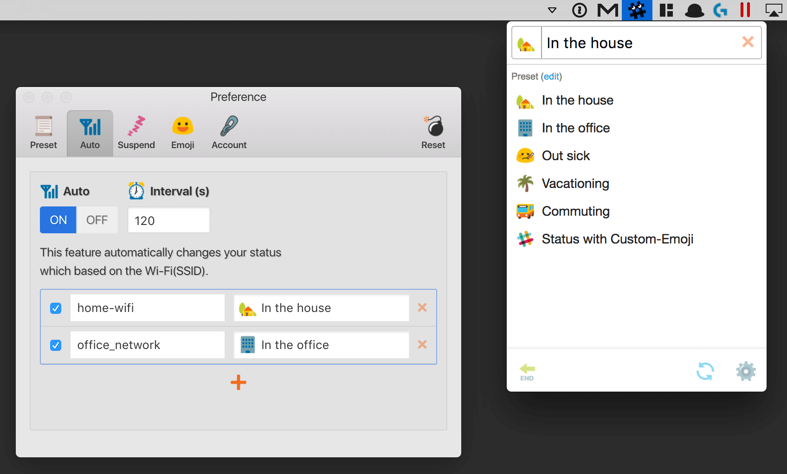
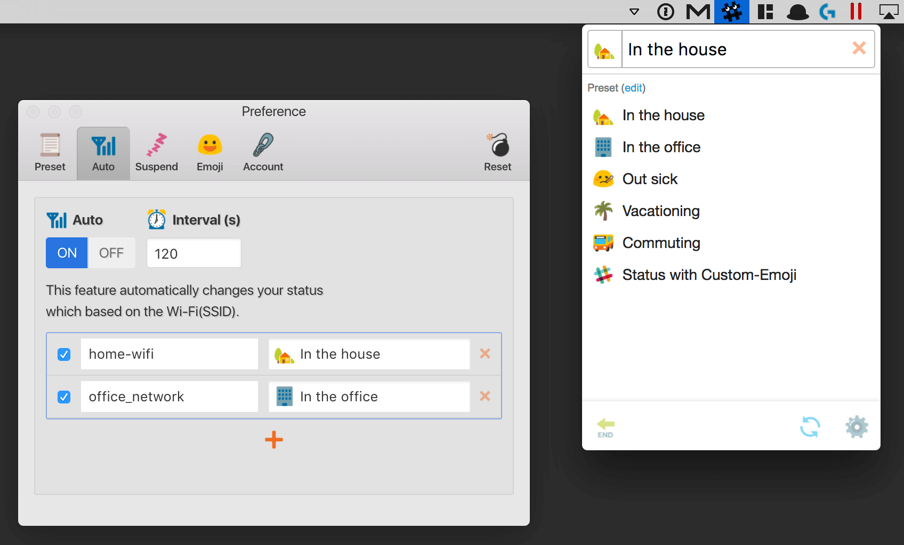
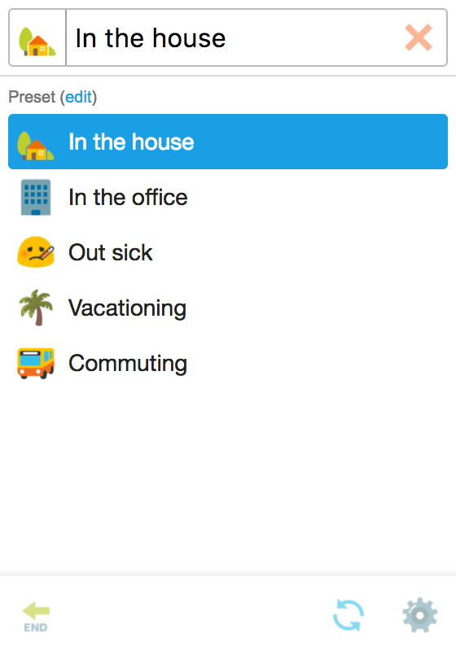
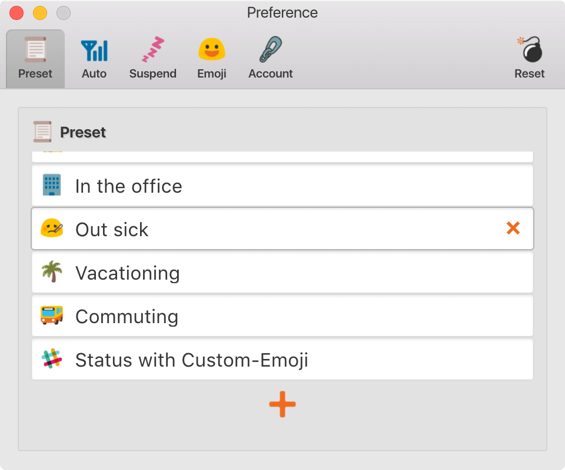
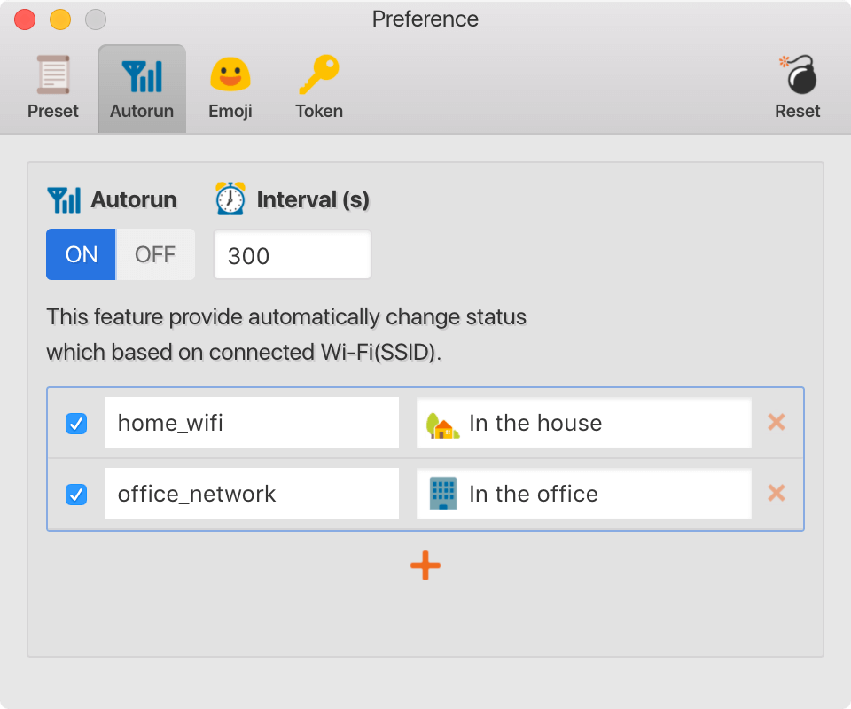
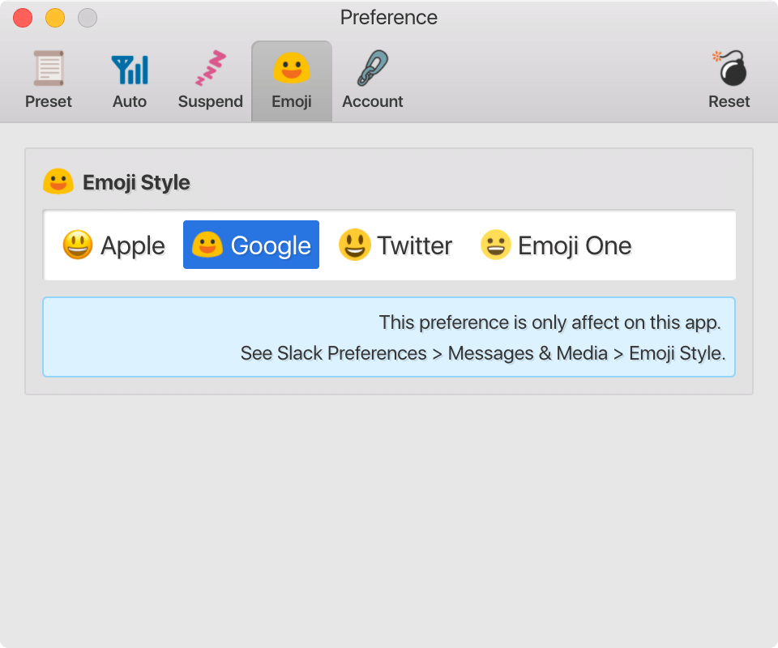

SlackStatusChanger is to change Slack user-status quickly and automatically.

SlackStatusChanger is to change Slack user-status quickly and automatically.

You can change status on menubar

Preset is editable anything you want.

Associate your status with Wi-Fi (SSID).
This app will change status automatically when connected to the associated Wi-Fi.

You can choose what you like from the four Emoji-Style.